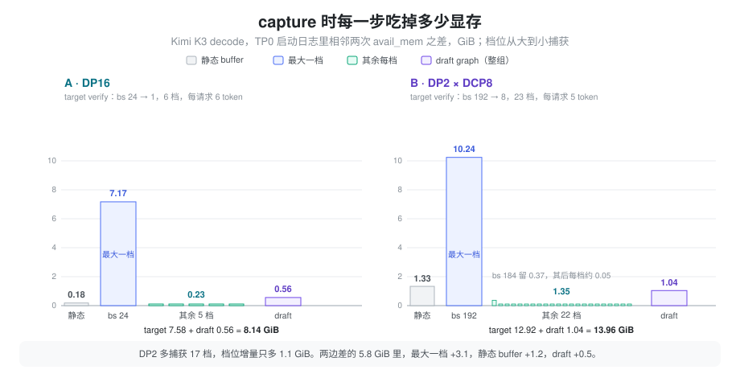
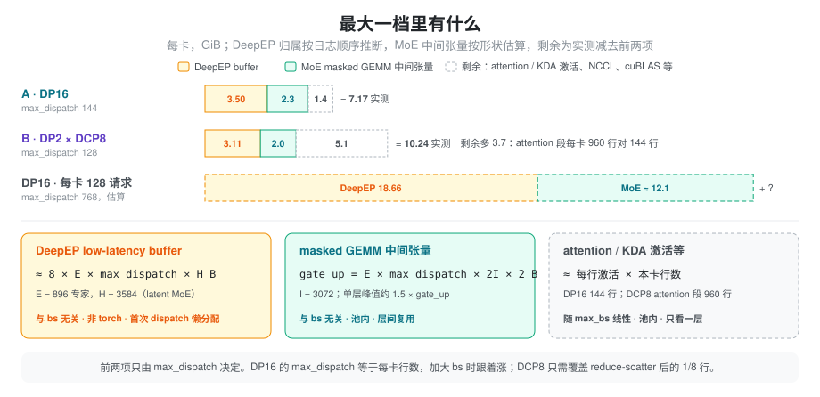

运行时显存 讲过，CUDA Graph 把 capture 时的峰值变成了常驻占用；Cuda Graph 讲了私有池和倒序捕获为什么能让多张图共用一份临时区。本篇回答剩下的问题：这块常驻到底有多大，由哪几项组成，每一项随什么参数变化，以及怎么从启动日志里把它们量出来。例子是 Kimi K3 在 2 机 16 卡 B200 上的两套 decode 部署：DP16 和 DP2 × DCP8，两者的整体对比见 K3 Decode：DP16 vs DP2×DCP8。
问题：启发式差了一个数量级
不指定 --mem-fraction-static 时，SGLang 用
server_args.py 里的两个函数给 graph
预留显存（单位 MB，公式见 运行时显存）：reserve_for_graph_mb()
大致是
max_bs × 2 + max_bs × dp_size × 3，reserve_for_deepep_a2a_mb()
在 decode 开 DeepEP 时固定再加 2048。把 K3
两套部署的参数代进去，和 TP0 启动日志里 target、draft 两组
graph 的实测占用对比：
| 每卡 | A · DP16 | B · DP2 × DCP8 |
|---|---|---|
| decode 最大 capture bs | 24 | 192 |
reserve_for_graph_mb |
24 × 2 + 24 × 16 × 3 = 1200 MB | 192 × 2 + 192 × 2 × 3 = 1536 MB |
reserve_for_deepep_a2a_mb |
2048 MB | 2048 MB |
| 启发式合计 | 3.2 GiB | 3.5 GiB |
| 实测（target + draft graph） | 8.14 GiB | 13.96 GiB |
启发式只到实测的 25%~40%。两份脚本都手动指定了
--mem-fraction-static，所以这个公式没有生效，但它说明了一件事：graph
显存不能按「每个 bs 几 MB」来估。这块显存又直接和 KV cache
抢空间，DP2 的 13.96 GiB 相当于它每卡 MLA KV 池（34.6
GiB）的 40%。想调大
--cuda-graph-max-bs，或者在固定显存下多放
KV，都需要先知道这十几 GiB 由什么组成。
抽象：一块与 batch 无关的底，加最大一档，加每档一点
先看 SGLang 捕获一组 graph 的过程。档位按 bs 从大到小排列，每一档做三件事：
- 用这一档的形状跑 2 次 eager warmup，每次后面跟一次
synchronize和 TPbarrier； - 进入
torch.cuda.graph(...)，它会先synchronize再empty_cache，把 warmup 期间 PyTorch 申请又释放掉的块还给驱动； - 在进程共用的 graph 私有池里捕获一次 forward。
日志进度条
Capturing batches (bs=… avail_mem=…)
打的是每一档开始时的剩余显存，相邻两档之差就是这一档留下来没还的显存。按这个差值，graph
显存可以拆成三层：
- 静态 buffer：capture
之前、在池外按最大档分配，比如输入 id、位置、attention
元数据，以及
GraphSharedOutput那块(max_bs × 每请求 token 数, vocab)的 FP32 logits。随最大 bs 线性增长，不随档位数增长。 - 最大一档：第一张图。它包含三类东西：
- 池内单层最宽处的临时激活。层与层之间复用，所以只看一层，不乘层数；大小随「本卡这一段 forward 的行数」线性增长。
- 池内形状由配置而不是由 batch 决定的中间张量。最典型的是 DeepEP low-latency 之后 masked GEMM 的输入输出，它们按最坏情况开，batch 小了也不会变小。
- warmup 触发的懒分配：DeepEP
buffer、NCCL 按需建立的连接和 buffer、cuBLAS workspace
等。它们在第一次被用到时才分配，而第一次 forward
往往就是最大档的 warmup。这些分配不经过 PyTorch
allocator，
empty_cache不会还掉它们，于是它们和 graph 本身无关，却被记进了「最大一档」。
- 每多一档：这张图的输出张量和图对象本身（93 层、每层几十个 kernel 节点）。倒序捕获时，小档的临时激活落进最大档留下的空洞，几乎不再新增。
核心结论是：档位数几乎不影响总量，决定总量的是最大一档，而最大一档里常有一大块和 batch 无关。 实测的两套部署正好说明这一点：

DP2 比 DP16 多捕获 17 档，档位增量只多 1.1 GiB；两边 graph 显存差的 5.8 GiB 里，最大一档占 3.1 GiB，静态 buffer 占 1.2 GiB，draft graph 占 0.5 GiB。
计算：每一项怎么估
静态 buffer：logits 可以直接算
GraphSharedOutput 的 logits 缓冲是
行数 × vocab × 4 B，行数由
ModelRunner.max_decode_logits_rows()
算出，等于最大 capture bs 乘每请求 token 数。K3 的词表是
163840：
- DP16：24 × 6 = 144 行，0.09 GiB；
- DP2：192 × 5 = 960 行，0.59 GiB。
实测的静态段（Capture ... begin 的 avail
减第一根进度条的 avail）是 0.18 和 1.33 GiB。logits
是其中能直接算的一项，其余是各种按最大档预分配的输入
buffer，这里没有逐个拆。
与
batch 无关的 MoE 缓冲：只看
num_max_dispatch_tokens_per_rank
DeepEP low-latency
的接收区按最坏情况开：每个专家都可能从每个 rank 收到
max_dispatch 个
token（max_dispatch 即
SGLANG_DEEPEP_NUM_MAX_DISPATCH_TOKENS_PER_RANK）。本卡有
num_experts / ep_size 个专家、每个专家要给
ep_size 个来源各留 max_dispatch
行，乘起来是 num_experts × max_dispatch
行，和实际 batch 无关。两块东西都按这个行数开：
- DeepEP buffer：dispatch 和 combine
各一份 BF16 接收区，再加双缓冲，约
8 × num_experts × max_dispatch × hidden字节。精确值用deep_ep.Buffer.get_low_latency_rdma_size_hint(max_dispatch, hidden, ep_size, num_experts)算。它不走 PyTorch allocator。 - masked GEMM
中间张量：
layers/moe/moe_runner/deep_gemm.py里 gate_up 的输出是(num_local_experts, ep_size × max_dispatch, 2 × moe_intermediate)的 BF16，随后量化成 FP8 给 down GEMM，down 的输出又是一份 BF16。它们在池内，层间复用，峰值按单层算。
K3 的 MoE 是 latent 结构，进 DeepEP 的是
routed_expert_hidden_size = 3584，不是模型的
hidden 7168（create_moe_dispatcher 取的是
moe_runner_config.hidden_size）。代入 896
个专家、moe_intermediate 3072：
| max_dispatch | 对应部署 | DeepEP buffer | gate_up 输出 | MoE 单层峰值（估算） |
|---|---|---|---|---|
| 128 | DP2（每卡 192 × 5 / 8 = 120 行） | 3.11 GiB | 1.31 GiB | ≈ 2.0 GiB |
| 144 | DP16（每卡 24 × 6 = 144 行） | 3.50 GiB | 1.48 GiB | ≈ 2.3 GiB |
| 768 | DP16 每卡 128 请求（128 × 6） | 18.66 GiB | 7.88 GiB | ≈ 12.1 GiB |
单层峰值按「FP8 接收 + BF16 gate_up 输出 + FP8 down
输入」同时存活估算。最后一行说明，DP16 想把每卡 bs 从 24
调到 128，先撞上的是这块按 max_dispatch
开的底：仅这两项就约 31 GiB，和 attention 激活无关。
懒分配：DeepEP 被记进了最大一档
DeepEPBuffer.get_deepep_buffer 只在
dispatcher 第一次 dispatch 时由 _get_buffer()
调用，结果作为进程级单例缓存在
get_resources().buffers["deepep_ep_state"]
里。DP16 的 TP0 日志中，KV pool 分配完到
Capture target verify CUDA graph begin 之间只有
attention backend 初始化和 kernel 编译，没有
forward，所以第一次 dispatch 发生在 bs 24 那一档的 warmup
里，DeepEP 的 3.50 GiB 落在这一档的 7.17 GiB
之内。这是从日志顺序推出来的，没有直接打点；draft graph
的第一档只有 0.55 GiB，和单例被复用的推论一致。
NCCL 也有同样的现象。DP16 的 target capture
期间，日志里有一个 16 rank 的 NCCL communicator 刚开始
Init；Kimi K3
B200 里记录过，draft 里的 all-to-all 会让 NCCL 在
capture 中按需建立 per-peer P2P 连接，每个 peer 约 0.4
GB。
最大一档的拆分
把上面几项放进实测的最大一档：
| 每卡 | A · DP16 | B · DP2 × DCP8 |
|---|---|---|
| 最大一档实测 | 7.17 GiB | 10.24 GiB |
| DeepEP buffer（推断在内） | 3.50 | 3.11 |
| MoE masked GEMM 峰值（估算） | ≈ 2.3 | ≈ 2.0 |
| 剩余：attention / KDA 激活、NCCL、cuBLAS 等 | ≈ 1.4 | ≈ 5.1 |

剩余项 DP2 多出 3.7 GiB，方向上和「本卡 attention 段的行数」一致：DP16 每卡 24 个请求 × 6 个 token = 144 行；DCP8 的 attention 段每卡要处理整个 DP 的 192 个请求（Q 在 8 卡间复制，每卡算全部 96 个 head 对 1/8 token 的 attention），192 × 5 = 960 行。同样是实例 384 并发，DCP8 每卡 attention 段的行数是 DP16 的 6.7 倍。这一项没有再往下拆，需要用 memory snapshot 才能分到具体张量。
两种布局各自随什么涨
把每一项写成参数的函数，就能看出两种布局加大 bs 时各自先撞哪面墙：
graph 显存 ≈ 静态 buffer(max_bs)
+ MoE 固定项(max_dispatch) # DeepEP buffer + masked GEMM 中间张量
+ 懒分配 # NCCL、cuBLAS 等，与 bs 关系不大
+ 每行激活 × 本卡行数(max_bs)
+ 每档增量 × (档位数 − 1)
+ draft graph（结构相同，通常小一个数量级）- DP16：本卡行数和
max_dispatch都等于「每卡请求数 × 每请求 token 数」。每卡 bs 每加 1，MoE 固定项按max_dispatch一起涨，而这一项的系数很大（上表 144 → 768，从 5.8 GiB 涨到约 31 GiB）。 - DCP8：
max_dispatch只需要覆盖 reduce-scatter 之后的 1/8 行，MoE 固定项涨得慢 8 倍；但 attention 段和 logits 按整个 DP 的行数涨，相同实例并发下，每卡承担的请求数是 DP16 的 8 倍。
所以「DCP8 的 graph 更贵」只在实例并发相同时成立。比较两种布局能开多大的 bs，要分别算这两条斜率，不能只看档位数。
测量：从日志读出每一项
- 读进度条。 每组 graph 的
Capture ... CUDA graph begin. avail mem=X减第一根进度条的 avail 是静态 buffer；第一根减第二根是最大一档；第二根到... end. avail mem=Y是其余档位的增量。日志里的 GB 按 2^30 计。DP2 的 target verify 一组读出来是 22.33 → 21.00 → 10.76 → … → 9.41，即静态 1.33、最大一档 10.24、其余 22 档 1.35 GiB。 - 两次启动求斜率。 其他参数（包括
max_dispatch）都不变，只改--cuda-graph-max-bs，最大一档之差除以行数之差就是「每行激活」。不同布局之间不能这么拟合，因为固定项不同。 - 分开 torch 与非 torch。 在最大一档
capture 前后分别记录
torch.cuda.memory_reserved()和torch.cuda.mem_get_info()。前者的增量是池内张量，两者增量之差是 DeepEP、NCCL 这类懒分配。 - 拆到具体张量。 对最大一档打开
torch.cuda.memory._record_memory_history()，capture 后导出 snapshot，能看到池内每个块是哪一行代码申请的。
每档增量还有一个细节：DP2 第二档（bs 184）留下了 0.37 GiB，之后每档 0.03~0.08 GiB。倒序捕获能复用空洞，但第一次在池里换形状时仍会有一些新块。
在 SGLang 中
- 捕获循环：
model_executor/decode_cuda_graph_runner.py把档位倒序排列（注释是 Reverse so cuda graphs share memory better），逐档调用 backend。model_executor/runner_backend/full_cuda_graph_backend.py的capture_one先跑 2 次 warmup，再在torch.cuda.graph(cuda_graph=graph, pool=self._pool, stream=...)里捕获；_graphs和_outputs按形状保留每张图和它的输出。 - 共用池：
model_executor/runner_utils/pool.py的get_or_create_global_graph_memory_pool让进程内的 graph backend 共用一个池，target 和 draft 的临时区也能互相复用。这是 draft graph 只有 target 的十分之一左右的原因之一。 - logits
缓冲：
model_executor/graph_shared_output.py，行数来自ModelRunner.max_decode_logits_rows()。 - DeepEP
buffer：
layers/moe/token_dispatcher/deepep.py的DeepEPBuffer.get_deepep_buffer，low-latency 模式下大小取Buffer.get_low_latency_rdma_size_hint；hidden_size由layers/moe/fused_moe_triton/layer.py的create_moe_dispatcher从moe_runner_config传入。 - 启发式与后置测量：
server_args.py的reserve_for_graph_mb()和reserve_for_deepep_a2a_mb()。SGLANG_ENABLE_POST_CAPTURE_KV_SIZING可以等 capture 完再按实测剩余显存定 KV pool，但对 MLA 和dcp_size ≠ 1不生效（见 显存预算与统计口径），K3 两套部署都用不上，只能手动定--mem-fraction-static。
影响 graph 显存的开关，按它们作用的那一项排列：
| 开关 | 作用的项 | 说明 |
|---|---|---|
SGLANG_DEEPEP_NUM_MAX_DISPATCH_TOKENS_PER_RANK |
MoE 固定项 | 设到刚好覆盖本卡 dispatch 行数即可，DP2 用 128 覆盖 120 行 |
--cuda-graph-max-bs |
静态 buffer、激活 | DCP8 下要按整个 DP 的行数估 |
--cuda-graph-bs
档位数 |
每档增量 | 每档约 0.05 GiB，影响最小 |
SGLANG_ENABLE_STATIC_AUX_HIDDEN_CAT_BUFFER=1 |
每档增量 | 各 graph 共用 aux hidden 拼接 buffer，每个 graph 省约 40 MB |
SGLANG_DSPARK_LM_HEAD_VOCAB_ALL_GATHER=1 |
懒分配 | 避免 draft capture 里 NCCL 按需建 per-peer 连接 |
--mem-fraction-static |
全部 | 启发式不准时，按本篇的拆法反推一个值 |
小结
graph 显存可以拆成静态
buffer、最大一档和每档增量三层，总量几乎只由最大一档决定。最大一档里又藏着与
batch 无关的部分：DeepEP low-latency 的接收区和 masked GEMM
中间张量按 num_experts × max_dispatch
开，DeepEP buffer 还因为懒分配被记进了第一次
warmup。所以估算时先算 MoE
固定项，再按本卡行数估激活，最后才轮到档位数。对 K3
来说，DP16 加大每卡 bs 会先被 max_dispatch
拉高的 MoE 固定项卡住，DCP8 加大 bs 则会先被整个 DP 行数的
attention 激活和 logits 卡住。要拿到准确的斜率，用两次只改
--cuda-graph-max-bs 的启动读进度条。